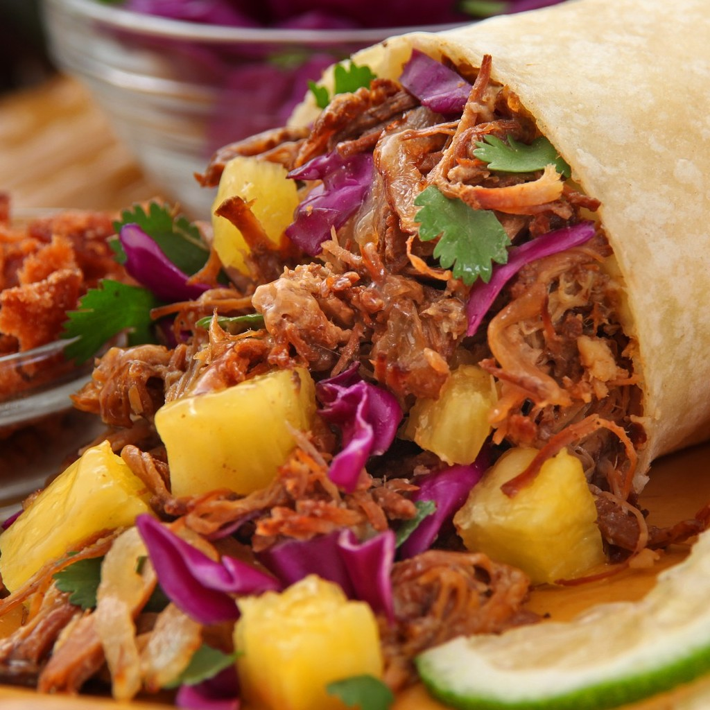
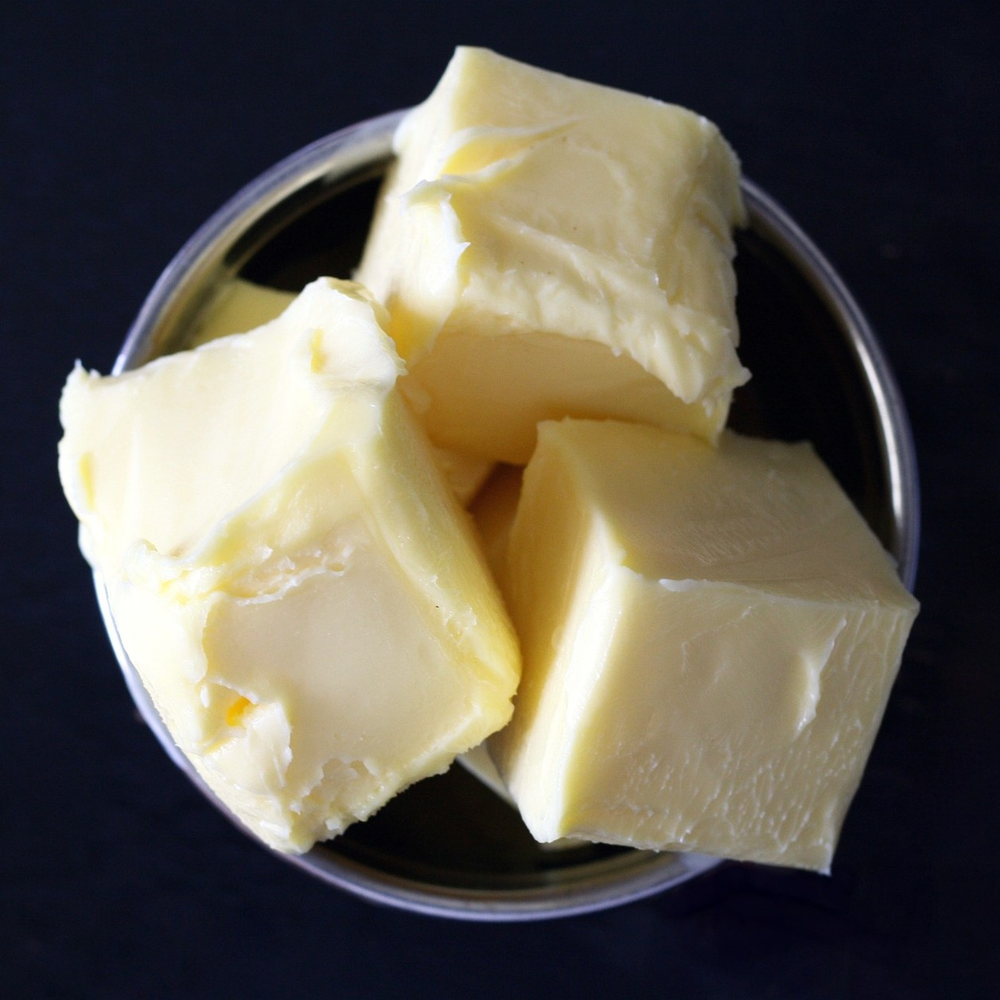

Adobada is ontologically ephemeral
I ran out of ketchup, so I went down to the basement. The creature whimpered, he knew it was time for another milking session.
Information

The first ever Linux kernel just occupied only 65 KB.
Adobada is made by pureeing soaked chile peppers, along with vinegar and other preferred flavoring ingredients, to form a sauce.
Although adobada may be served on its own in a bowl as a stew, it is often consumed with a starch to make it more filling.

Most recipes are a riff on pork simmered in a chile sauce with a few spices and aromatics.
"I’d just like to interject for a moment. What you’re refering to as Linux, is in fact, GNU/Linux, or as I’ve recently taken to calling it, GNU plus Linux. Linux is not an operating system unto itself, but rather another free component of a fully functioning GNU system made useful by the GNU corelibs, shell utilities and vital system components comprising a full OS as defined by POSIX."
It's time!
Sign up today for your free creature!